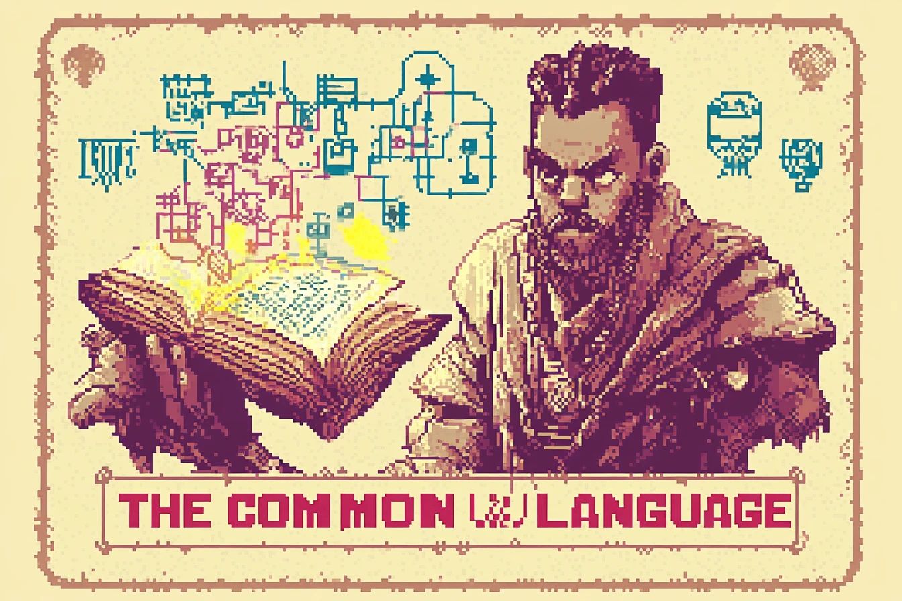
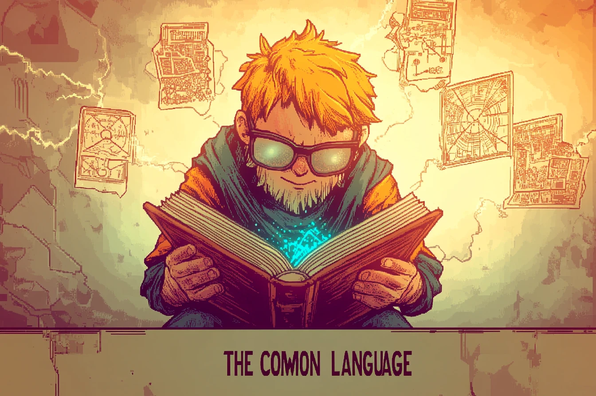
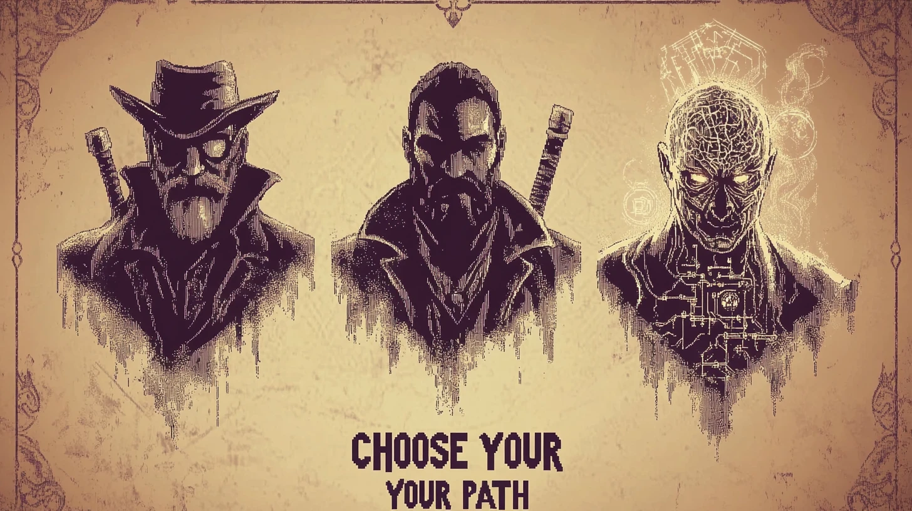
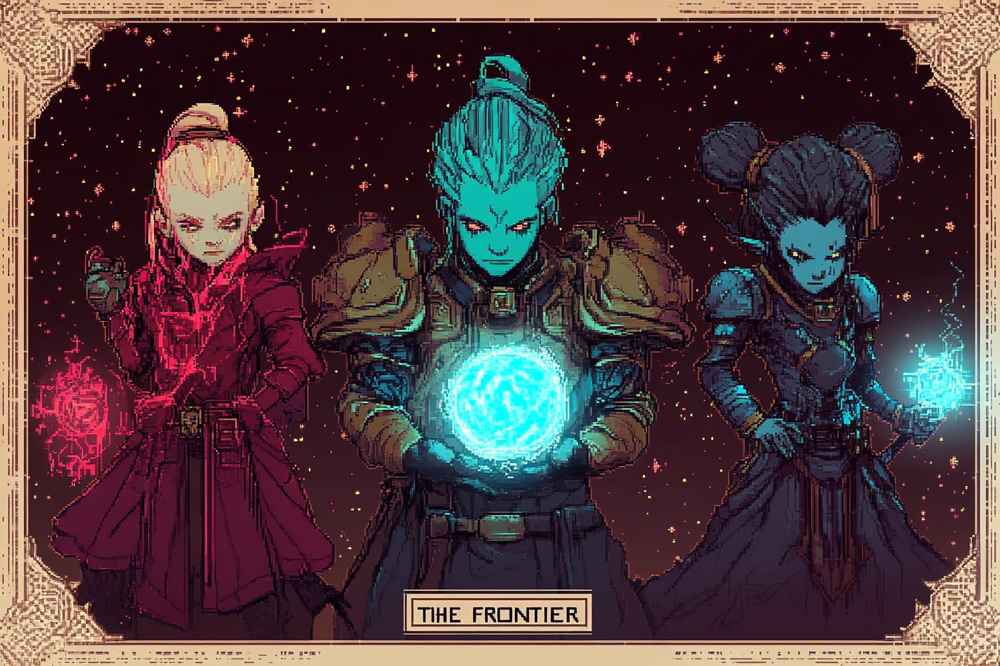

The Archivist
Character sheet
Tier 0 diagnostic
Novice of the Common Language
Class: unchosen. You pick your path in month 4.
Entry stats · click a pip to rate yourself (example values shown)
Skill tree
Click a competency to travelVertices are competencies, mastered when their foundation readings, quest and save point are done. An edge lights up between two mastered neighbours. A triangle fills only once you have also read the deepening and synthesis readings of all three, so the foundation builds the skeleton and the rest of the year fills it in. The fog is your semantic horizon, r* = −β log Δ, drawn as a union of balls around what you know. The layout is illustrative.
This competency is beyond your semantic horizon. You can read ahead; XP counts all the same.
Exit evidence.
Reward
Watch for
Inventory
Bestiary
Each one falls to a reading in your inventoryThe Oracle's riddle
Last quest stepSaved in this browser only. Nobody else sees it.
Act II · Choose your path
Tier 2 · Research Streams · draftAct III · The Frontier
Tier 3 · optionalThe road ahead
Year oneYOU ARE HERE
Tier 1 · weeks 1–12
Act I · The Common Language
Eight competencies, one checkpoint each. Everyone, every project.

YOU ARE HERE
Tier 2 · from month 4
Act II · Choose your path
- Simplex Weaver · higher-order networks
- Scaffold Seer · brain and clinical
- Horizon Mage · semanticity and machine intelligence
- Envoy · social, animal or collective AI (Contagion Bard, Coda Speaker, Swarm Caller)
- Scale Shifter · renormalization and criticality

YOU ARE HERE
Tier 3 · months 9–12 and beyond
Act III · The Frontier
Take one NPLab claim from its assumptions to a falsifier, then try to kill it. Fought at lab meeting.
Optional, except the final boss